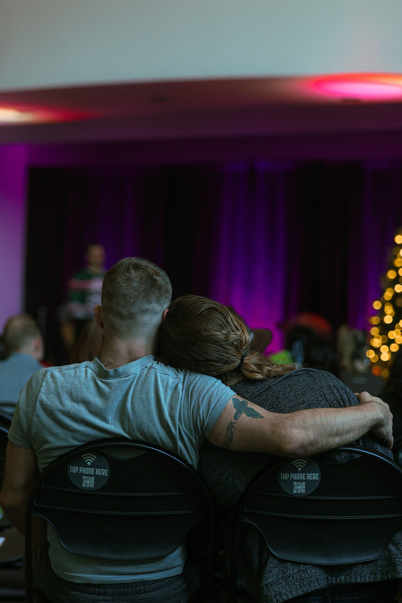

Thursday, December 24 · Leander
Christmas Eve
at Axiom
Candles, music, and a short service. Bring your kids. Bring your parents. Bring the grandparents who are in town and keep asking if you’ve found a church yet. We want you here.
Same service, both times. Camacho Elementary, 501 Municipal Dr, Leander. Axiom Kids for birth through 5th grade.
Bring everyone
Christmas Eve is one of the few nights the whole family is in the same room. So we built the night around that. A place where your family can meet Jesus, for generations to come.
- Candles at the end.
- Music, and a short message about why Jesus came.
- Time with your family. Out in time for dinner.
Kids are covered
Axiom Kids is open for birth through 5th grade. Every serve team member is background checked, and only the person with the matching tag picks your kid up.
Older kids? We’ll have something fun for them too.
Or keep them with you for the candles. Your call.
Questions
Do I need to sign up?
No. Just show up. If you let us know you’re coming, we’ll send you what to expect and a reminder the day before.
Where do I go when I get there?
Someone will be out front to point you in the right direction. And if you make it inside without anyone stopping to say hi, find the New Here area. They’ll take care of you.
Is there something for my kids?
Yes. Axiom Kids is open for birth through 5th grade. Every serve team member is background checked, and only the person with the matching tag picks your kid up. Older kids get something fun too. Or keep them with you for the candles.
How long is it?
Short. It’s Christmas Eve. We know you have somewhere to be after.
What should I wear?
Whatever you’d wear to see family. Ugly sweaters welcome.
Which time should I pick?
Both services are the same. Pick the one that fits your day.
See you Christmas Eve
Thursday, December 24 at 3:00 or 4:30 PM. Camacho Elementary in Leander. A place you can stop pretending, even on Christmas.